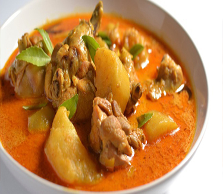

Bahan:
- 1 ekor ayam negeri ukuran sedang potong 10 bagiani
- 1 buah jeruk nipis untuk melumuri ayam
Bumbu Halus:
- 8 siung bawang merah
- 6 siung bawang putih
- 4 butir kemiri
- 1/2 sdt ketumbar alus yg disangrai dulu
- 1 sdt jinten alus yg disangra dulu
- 1 ruas kunyit
- 10 buah cabe merah kriting
- 15 buah cabe rawit merah
- 1 ruas lengkoas digeprek
- 4 lembar daun salam
- 3 lembar daun jeruk buang tulangnya
- Secukupnya garam, penyedap,lada
- 3 batang sereh digeprek
- Santan dari 1butir kelapa dibuat santan kental dan encer
Cara Membuat:
- Cuci bersih ayam, kemudian lumuri dengan jeruk nipis dan sedikit garam (kurleb 15menit)
- Cuci lg ayam yg tadi dilumuri jeruk nipis
- Goreng ayam sebentar saja sampai berubah warna jdi agak kecoklatan biar tdk bau amis, lalu angkat dan tiriskan.
- Blender bumbu sampai halus
- Lalu tumis bumbu sampai harum dan tdk bau mentah
- Masukan laos,daun salam,sereh,daun jeruk aduk2 sampai sereh layu
- Lalu masukan ayam,aduk rata lalu masukan santan encer
- Tambahkan garam,lada dan penyedap rasa
- Sesekali diaduk agar santan tidak pecah biarkan sampai medidih dan agak sat.
- Kalau rasa sudah sip, masukan santan kental sedikit-sedikit
- Aduk pelan-pelan agar santan tdk pecah, tunggu sampai medidih lalu matikan api dan siap untuk dihidangkan
- Note: saya tambahkan tahu goreng dan kentang rebus pas barengan dengan santan kental..